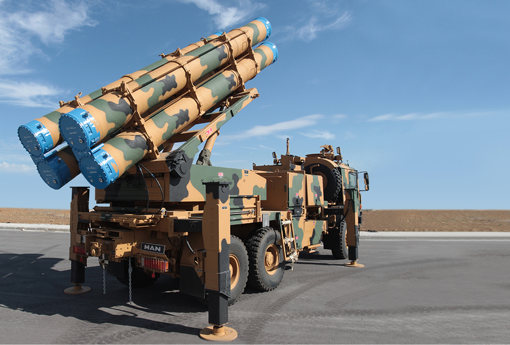
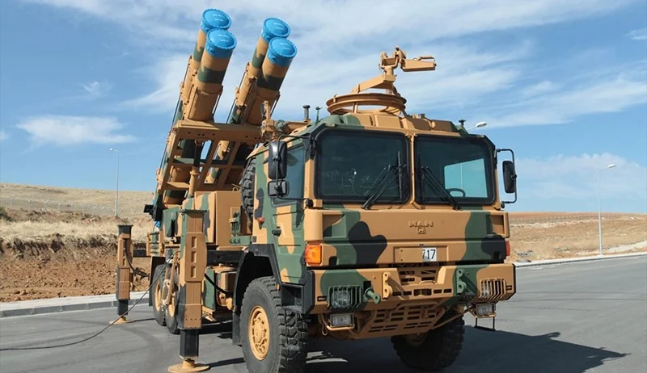

Genel Bilgi
TRG-300, 300 mm sınıfında geliştirilen uzun menzilli güdümlü füzedir. Yüksek isabet ve tahrip gücü sayesinde 20–120 km menzil aralığındaki yüksek öncelikli hedefler üzerinde yoğun ve etkili ateş gücü oluşturmak amacıyla geliştirilmiştir.
Füze, klasik topçu roket sistemlerine kıyasla daha uzun menzil, daha yüksek vuruş doğruluğu ve daha büyük etki alanı sunar. Böylece sadece yakın ateş desteği değil, derinlikteki kritik hedeflere karşı da operasyonel ve taktik seviyede önemli bir çözüm haline gelir.
TRG-300, ROKETSAN tarafından geliştirilen K+ Silah Sistemi ile Çok Namlulu Roket Atar Silah Sistemi başta olmak üzere uygun arayüze sahip farklı platformlardan atılabilecek şekilde tasarlanmıştır. Elektronik harp dayanımı, kısa atışa hazırlık süresi ve düşük istenmeyen etki de sistemin öne çıkan yönlerindendir.
Temel Özellikler
Menzil
20–120 km
Çap
300 mm
Ağırlık
585 kg
Uzunluk
5.295 m
Harp Başlığı
105 kg
Hassasiyet
≤ 10 m CEP
Detaylı Teknik Özellikler
| Mühimmat Tipi | 300 mm güdümlü füze |
| Adı | TRG-300 |
| Görev Alanı | 20–120 km menzilde yüksek öncelikli hedeflere hassas ve etkili ateş gücü |
| Menzil | 20–120 km |
| Uzunluk | 5.295 m |
| Çap | 300 mm |
| Ağırlık | 585 kg |
| Güdüm | KKS destekli ANS / sadece ANS |
| Kontrol | Elektro-mekanik tahrik sistemi ile aerodinamik kontrol |
| Yakıt Tipi | Kompozit katı yakıt |
| Harp Başlığı Tipi | Yüksek patlayıcı ve çelik bilyeli |
| Harp Başlığı Ağırlığı | 105 kg |
| Etki Yarıçapı | ≥ 70 m |
| Tapa Tipi | Çarpma ve yaklaşma |
| Raf Ömrü | 10 yıl |
| Hassasiyet | ≤ 10 m CEP |
| Atış Platformu | K+ Silah Sistemi, Çok Namlulu Roket Atar Silah Sistemi ve uygun arayüzlü diğer platformlar |
| Öne Çıkan Özellik | 120 km sınıfında, yüksek doğruluk ve yüksek tahrip gücü sunan yerli güdümlü roket/füze çözümü |
Operasyonel Kabiliyetler
| En Uzak Hedefe Ulaşım | 5 dakikadan kısa sürede |
| Elektronik Harp Dayanımı | Yoğun GPS/KKS karıştırması altında doğrulanmış dayanım |
| Hassas Vuruş | Yüksek isabet ile kritik hedeflerin hızlı etkisiz hale getirilmesi |
| Düşük Yan Hasar | Düşük collateral damage yaklaşımı |
| Hava ve Arazi Şartları | 7/24 her türlü hava ve arazi şartında kullanım |
| Atışa Hazırlık | Kısa sürede atışa hazır olma |
| Görev Başarımı | Derinlikteki yüksek öncelikli hedeflere zamanında ve yoğun ateş gücü |
| Maliyet Etkinliği | Uzun menzilli hassas topçu ateşi için maliyet etkin çözüm |
Hedef Seti
| Radar Sistemleri | Hava savunma radarları ve sensör mevzileri |
| Komuta Merkezleri | Kritik komuta-kontrol tesisleri |
| Lojistik Hedefler | Depo, ikmal ve mühimmat noktaları |
| Topçu Sistemleri | Düşman topçu ve roket bataryaları |
| Toplanma Bölgeleri | Birlik intikal ve toplanma alanları |
| Diğer Yüksek Öncelikli Hedefler | Stratejik ve operasyonel önemdeki sabit hedefler |
Sistem Uyumu ve Batarya Yapısı
| Ana Fırlatma Sistemi | K+ Silah Sistemi |
| ÇNRA Uyumu | Çok Namlulu Roket Atar Silah Sistemi ile kullanım |
| Diğer Platformlar | Uygun arayüzlere sahip farklı kara platformlarına entegrasyon |
| Batarya Konsepti | Komuta kontrol, fırlatıcı ve mühimmat ikmal unsurlarıyla bütünleşik kullanım |
| Topçu Ailesindeki Yeri | 122 ve 230 mm sınıfının üzerinde, daha ağır başlık ve daha uzun menzil sağlayan üst sınıf çözüm |
Görseller


